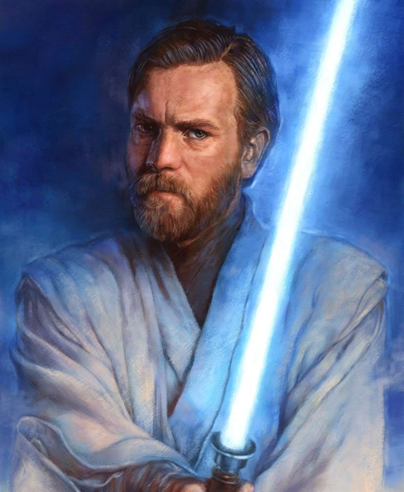

teste de alteração Obi-Wan Kenobi, mais tarde conhecido também como Ben Kenobi durante seu exílio, foi um Humano Mestre Jedi que serviu à República Galáctica. Ele foi mentor de tanto de Anakin Skywalker quanto seu filho, Luke, treinando-os nos caminhos da Força. Nascido planeta Stewjon, Kenobi foi levado como o aprendiz Padawan de Qui-Gon Jinn. Kenobi tornou-se o primeiro Jedi em um milênio a derrotar um Lorde Sith quando ele derrotou Darth Maul durante a Batalha de Naboo. Durante a batalha, Jinn foi mortalmente ferido por Maul, e pereceu nos braços de Kenobi. A pedido de Jinn, Kenobi levou Anakin Skywalker como seu Padawan, treinando durante a década que levaria às Guerras Clônicas. Durante a guerra, Skywalker tornou-se um Cavaleiro Jedi enquanto Kenobi (como resultado de seu sucesso militar na Orla Exterior) foi concedido o título de Mestre e nomeado ao Conselho Jedi. Os dois Jedi lutaram lado a lado como generais muitas vezes. Nos últimos dias das Guerras Clônicas, Skywalker passou para o lado sombrio, traindo os Jedi. O novo Mestre Sith de Skywalker, o Supremo Chanceler Palpatine, usou a Ordem 66 para destruir a Ordem Jedi, embora Kenobi sobreviveu e se reuniu com outro sobrevivente, o Grande Mestre Yoda. Kenobi confrontou Skywalker, que agora tomou o nome Darth Vader, em Mustafar, e os dois duelaram. Kenobi saiu vitorioso da batalha, ferindo gravemente Vader e deixando-o para morrer. No entanto, enquanto Palpatine estabelecia o Império Galáctico no lugar da República Galáctica, Vader era reabilitado, embora forçado a depender de um traje cibernético para suporte de vida. Kenobi foi a exílio em Tatooine, onde ele observaria o filho recém-nascido de Vader, Luke Skywalker, que ele levou para viver com seu tio e tia, Beru e Owen Lars. Dezessete anos depois, ele eventualmente confrontou seu velho inimigo, Maul, quem ele novamente derrotou em um breve duelo. Enquanto o antigo Sith morria nos braços de Kenobi, os dois finalmente fizeram as pazes, e Maul afirmou que Luke vingaria a ambos. Dois anos após a morte de Maul, Kenobi recebeu uma mensagem via R2-D2 de Leia Organa pedindo por ajuda no conflito da Aliança Rebelde contra o Império. O droide continha os planos da Estrela da Morte, uma estação de batalha criada pelo Império capaz de destruir planetas, e os planos precisavam ser levados a Bail Organa em Alderaan. Após a tia e tio de Luke Skywalker serem mortos pelas forças Imperiais buscando os planos, Skywalker concordou em se juntar a Kenobi nesta missão e ser treinado como Jedi. A dupla foi levado a Alderaan por Han Solo, apenas para descobrir que o planeta tinha sido destruído pela Estrela da Morte. A sua nave, a Millennium Falcon, foi capturada pelo raio trator da Estrela da Morte, e Kenobi foi confrontado por Darth Vader. Vader e Kenobi duelaram de novo, e Kenobi permitiu que Vader o matasse para que Luke e seus companheiros pudessem escapar da Estrela da Morte. Nos anos seguintes, enquanto Luke continuava lutando pela Aliança Rebelde, Kenobi continuou a lhe guiar como espírito da Força, incluindo direcionar Luke ao planeta Dagobah, onde Luke receberia treinamento de um dos Mestres de Obi-Wan, Yoda.
